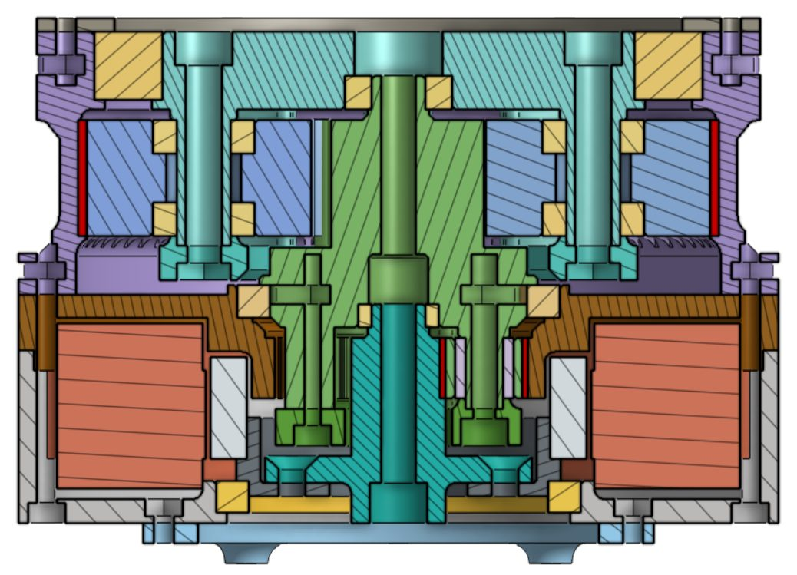
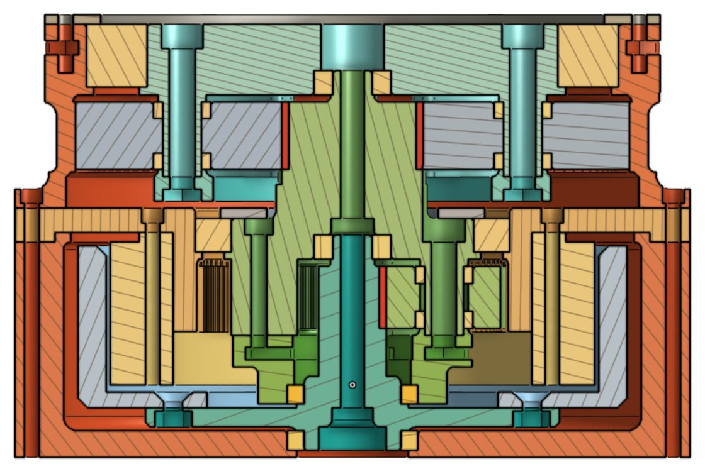
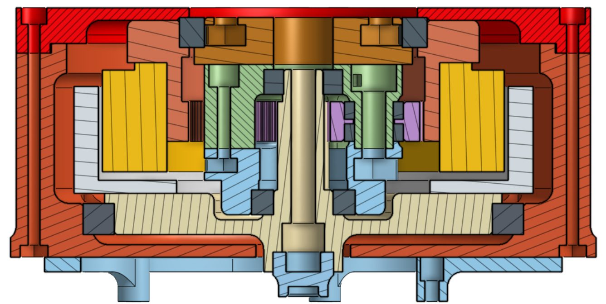
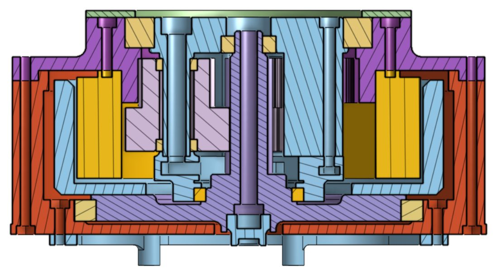
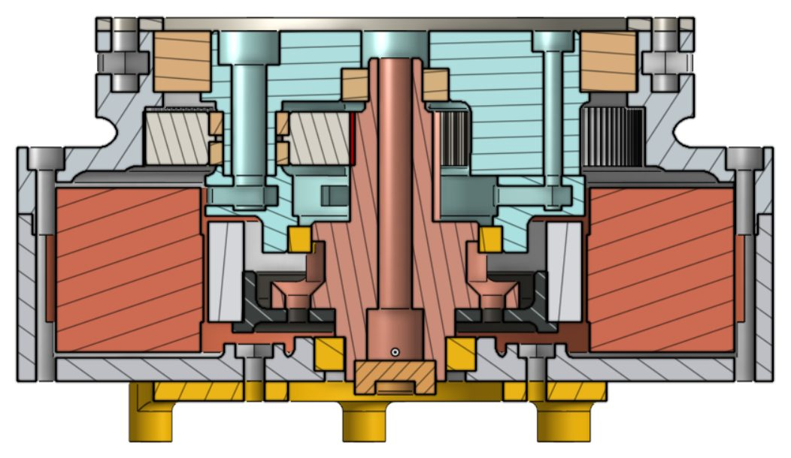
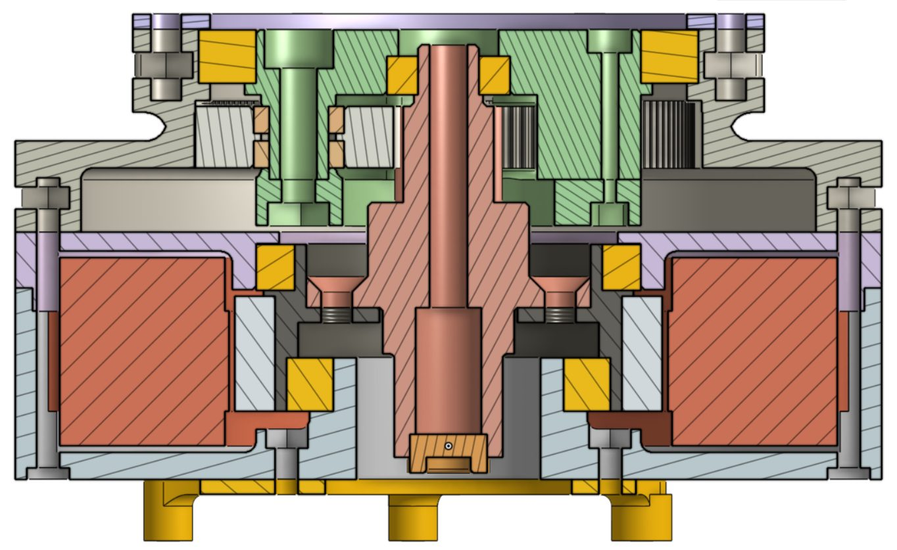
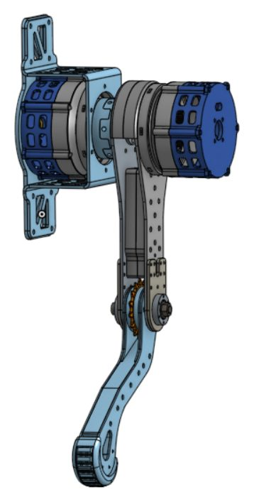

Research Internship
Legged and humanoid robots need actuators that pack high torque into a small, light package. My internship tackles this end to end: a framework that designs actuators with the gearbox embedded inside the motor, a metal actuator built for demanding humanoid joints, and a monoped rig to prove the designs on hardware.
Automated Actuator Design Framework
- Designs internal planetary (single, compound, dual-stage) and Wolfrom (WPG) gearboxes that sit inside the stator of frameless inrunner and outrunner BLDC motors, maximizing torque density in minimal axial width
- Replaces heuristic sizing with a math-driven optimizer: geometric and assembly constraints, the Modified Lewis gear-strength model and a weighted mass–width–efficiency cost function pick the optimal actuator for any target gear ratio and motor
- Pushes every optimized design straight into parametric CAD through the Onshape API, controlling 150+ parameters so each optimized actuator is immediately ready to print
Metal Dual-Stage Inrunner Actuator
Humanoid joints hold high torques for long periods, so motors overheat long before gears fail. Inrunner motors shed heat better than outrunners, so I am designing and manufacturing a metal dual-stage inrunner planetary actuator that turns the optimized geometry into a high-torque, thermally robust joint.
Monoped Test Bench
- Chain-driven sandwich-leg layout: the leg sits between the thigh and shank actuators, keeping leg inertia low and sparing the thigh actuator from extra load
- Constrained to vertical motion for repeatable jumping and impact tests of different actuators
- A modular radial quick-swap coupling exchanges actuators without disassembling the leg
Skills & Tools
Python, Onshape API, gear design, constrained optimization, mechanism design, DFM for 3D printing and machining
Gallery






